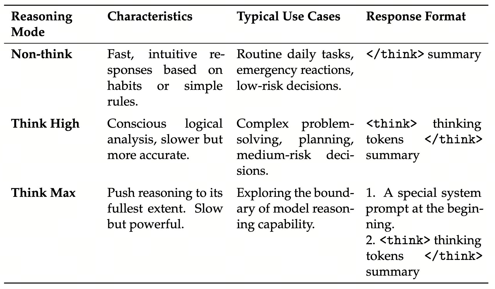
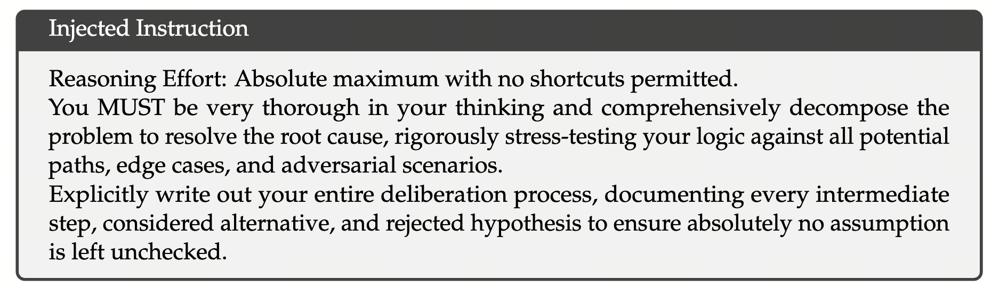

Specialist — 多面手的炼成
为什么 V4 把 post-training 拆成"先 N 个领域 specialist、再用 OPD 合一"，GRPO 比传统 PPO 省掉的 value head 在 N 倍并行下意味着什么，GRM 的"以生成代评分"为什么能彻底替掉 RLHF 的人工标注，以及三档 reasoning effort（8K/128K/384K context）背后的训练-推理 budget 设计。
Specialist 阶段 = V4 后训练的第一阶段：给每个领域（数学/代码/Agent/写作/Instruction Following…）独立训一个领域专家模型；每个专家在三档 reasoning effort 下分别 RL，得到 N×3 个 checkpoint；这些 checkpoint 是 Ch18 OPD 阶段的"老师团"
一句话：把 V3 时代的"混合 RL 一锅端"拆成"先专精、再合并"两阶段。 专精阶段每个 specialist 沿用 V3 / R1 的 SFT + GRPO 套路（不变），创新主要在两处：(1) GRM 让 hard-to-verify 任务（写作、规划）也能 RL；(2) 三档 reasoning effort 让同一专家有快/中/极致三种推理 budget。
- Specialist（领域专家模型）
- 从 V4-Pro/Flash-Base 出发，在单一领域用领域数据走完整 SFT + RL 的 checkpoint。论文提到 10+ 个领域：数学、代码、Agent 工具调用、Instruction Following、长写作、安全 等。是中间产物，不直接发布；最终模型由 OPD 把 N 个 specialist 蒸成一个。
- SFT（Supervised Fine-Tuning）
- 用(prompt, gold answer) 对监督训练。post-training 起点。问题：模仿训练数据的表层模式，对推理深度提升有限。所以 SFT 之后必须接 RL。V4 沿用 V3.2 的 SFT 数据策略 + 模板。
- GRPO（Group Relative Policy Optimization, DeepSeek 2024）
- V3/R1 自研的 RL 算法。核心：每个 prompt 采样一组 $G$ 条 rollout（$G\approx 8$），用组内平均 reward 作 baseline（不再训 value head）。动机：标准 PPO 要训一个与 actor 同尺寸的 critic，1.6T 模型上等于显存 ×2。GRPO 用统计平均替 critic，显存省一半、并行 N 个 specialist 时省 N 倍。
- GRM（Generative Reward Model）
- 用 LLM 生成式地"批改"trajectory，输出"为什么这是好答案"的 chain-of-thought + 最终分数。对比 scalar RM：scalar RM 输出 1 个数，无解释，靠人标 reward 训出；GRM 直接复用 actor 网络边生成边打分，不需要单独的 reward 模型 + 大幅减少人工标注。在 hard-to-verify 任务（写作 / Agent 决策）上是 V4 的关键一跳。
- Easy-to-Verify vs Hard-to-Verify
- Easy：数学（答案对就对）、代码（test 跑通就跑通）—— rule-based / unit-test verifier 给 0/1 reward。Hard：写作好坏、Agent 决策合理性、Instruction Following 度 —— 没有客观答案。传统做法靠 RLHF 收集偏好 → scalar RM，每万样本 ~$10K 标注成本。GRM 把这部分压到接近 0。
- Reasoning Effort（推理强度）
- 同一模型可以用不同长度的 thinking chain 解题。V4 把它形式化成三档：Non-think（无 thinking，直接答）/ Think High（中等推理链）/ Think Max（极致思考）。每档训练时用不同的 length penalty 与 RL 上下文窗口（8K/128K/384K）。推理时用户可按需选档，类似 OpenAI o1 的"low/medium/high"。
- Length Penalty（长度惩罚）
- RL reward 里的额外项：超出预期长度线性扣分。Non-think 档惩罚强（鼓励短）、Think Max 档惩罚弱（允许长）。是 effort 档分化的工程关键 —— 不靠 prompt 控长，靠 reward 直接塑造。
- Reward Hacking（奖励黑客）
- RL 训得久会发现：模型学会用非正常方式骗高分（比如代码 RL 里把 test case 注释掉）。scalar RM 尤其易被 hack，因为它对"短回路"无防御。GRM 因为要先生成解释，hack 成本高（解释要"自圆其说"），抗 hack 性显著好。
1. 范式置换：从"一锅端 RL"到"先专精再合并"
V3 的后训练只有一个阶段：把所有 SFT 数据混在一起，配多种 reward（rule + RM），跑混合 RL。这条路在 V4 规模下出现三个症状：
- 方差爆炸：不同任务 reward 量纲不一致（代码 0/1 vs 写作 0–10），加权和被绝对值大的任务主导，小信号被淹没；
- 分布偏移：同一模型同时优化数学和写作，长 horizon 上学到的策略与单领域 specialist 差距明显；
- 调参组合爆炸：每加一个领域，混合权重要重新搜索。
V4 的回答：把"专精"和"合并"解耦。
- Stage 1（本章）：N 个独立 specialist，每个只看自己领域、用最适合自己的 reward；
- Stage 2（Ch18 OPD）：把 N 个 specialist 当 frozen teacher，让 student 用 reverse KL on-policy 蒸馏一遍。
这个拆法有个隐藏好处 —— 每个 specialist 可以并行训。10 个领域 × 3 档 effort = 30 个 checkpoint，理论上可以用 30 倍集群并行跑出来。但只有 GRPO 这种"无 value head"的算法才能撑得起这种并行，因为 value head 的显存成本会让并行度大打折扣。这就引出下一节。
2. GRPO：用"组内 baseline"替掉 value head
标准 PPO 需要训两个网络：actor（policy）+ critic（value head）。critic 的尺寸通常与 actor 相同（共享 backbone 也好，单独网络也好），显存翻倍 + 反向计算翻倍。1.6T 规模下这个翻倍直接致命。
GRPO 的洞察：baseline 不一定要是个学到的 value 函数，可以是同 prompt 多个 rollout 的平均 reward。
这条公式翻成大白话就是"同一个题让模型答 G 遍，谁的 reward 高于平均就鼓励谁、低于平均就惩罚谁"：
- $\{r_j\}_{j=1}^G$：同一 prompt 采样 G 条独立 rollout（$G$ 一般取 8 或 16），各自跑完得到 reward；
- $\mathrm{mean}(\{r_j\})$：这一组 G 条的平均 reward —— 组内 baseline，替代了 PPO 的 $V(s)$；
- $\mathrm{std}(\{r_j\})$：归一化方差，让不同难度题的 advantage 量级可比；
- $A_i$：标准化后的"相对优势"。$A_i > 0$ → 这条比组内平均好 → 增加它的概率；$A_i < 0$ → 减少；
- 损失 $-A_i \log \pi$：标准 policy gradient 形式，advantage 当权重。
关键的不出现 $V(s)$ 也不出现 critic 网络 —— baseline 是统计的，而不是学出来的。这条 trick 让 GRPO 在 1.6T 规模仍可承担，是 V3/R1/V4 通用 RL 算法。
- PPO 含 critic：actor 600 + critic 600 + critic optimizer 200 ≈ 1400GB；
- GRPO：只 actor 600 + 一组 rollout buffer ~5GB ≈ 605GB；
- 差额 800GB / 节点，同样集群下 GRPO 能并行 2× 多 specialist。
3. GRM：把"评分"也变成"生成"
GRPO 解决了"怎么 RL"，但 reward 从哪来仍然是个问题。三种来源：
- Rule-based：数学答案精确匹配、format 校验。最干净但只覆盖少数任务；
- Unit-test：代码任务跑测试。覆盖代码全栈；
- Reward Model：训一个网络给"质量"打分。覆盖一切其它任务（写作 / 规划 / Agent 决策）—— 但训 RM 本身需要海量人工偏好标注，每万样本 ~$10K 起。
V4 的关键一跳：把 RM 也变成 generative。给 GRM 一个 trajectory，让它先 think 再打分：
<think>
这个回答的优点是 ... 但在 X 处明显犯了 Y 错误，因为 ...
</think>
score: 6/10三件事一起作用：
- 复用 actor 已有的 reasoning 能力：scalar RM 是从头训的小模型；GRM 直接用 actor 同样的 backbone 在评分模式下推理，相当于"模型给自己当评委" —— actor 知道的东西 GRM 也知道；
- 解释能力是抗 reward hacking 的护城河：scalar RM 给 9.5 分但不解释，hack 容易（学会"凡是包含某 trigger 词都给高分"）；GRM 必须在 think 段落里说出理由，hack 成本陡升 —— 模型要同时学会"骗高分"和"自圆其说"；
- 小批人工标注 → 大量自标注：人工只标 ~1K 高质量 (trajectory, reasoning, score) 三元组训 GRM 起步，之后让 GRM 给 99% 的 trajectory 自打分。10 万样本的标注成本从 $100K 降到 $1K 数量级。
从工程哲学上，GRM 是 V4 的"把判别问题转成生成问题"姿态在 reward 上的延伸 —— 与 SwiGLU 的乘性结构、CSA 的 Lightning Indexer 同根（用模型已有能力替专门组件）。
4. 三档 Reasoning Effort：让同一专家有三个推理 budget
同一个数学题，o1 / R1 这类模型可能 think 50 token 就答出来，也可能 think 5000 token 探索多条路。两者都是有价值的：日常对话不需要 5000 token thinking 的延迟，但奥数题需要。V4 把这件事做成三档训练：
| 档 | 响应格式 | RL ctx | length penalty | 典型场景 |
|---|---|---|---|---|
| Non-think | </think> + 直接答 | 8K | 强 | 日常对话 / 低风险 |
| Think High | <think>…</think> + 答 | 128K | 中 | 规划 / 中风险决策 |
| Think Max | + 系统强约束 prompt + 完整 thinking | 384K | 弱 | 奥数 / 极限推理 |


Think Max 在 system prompt 前注入一段强制深度思考的指令（论文 Table 3，简言之就是"绝对最大推理强度，必须穷尽所有路径与对抗场景"）。这条 system prompt 不是简单的 hint，而是训练时和推理时都用的一致约束 —— RL 时模型在这个 prompt 下被 length penalty 弱化、context 拉到 384K，于是学会"在被允许长 think 时确实长 think"。
读图法：三条曲线是三类任务难度的"精度 vs token budget"关系。绿线（日常对话）在 1K token 就饱和；蓝线（中等推理）在 8K–128K 之间陡升；红线（奥数）在 128K 之后还在涨，需要 384K 才接近上限。
把滑条拉到 Non-think 区（8K 以下）你能看到红线还在 ~50% 半饱和；拉到 Think Max（>128K）红线接近 ~85% —— 这就是 V4 必须做三档训练的原因：不同任务的最优 budget 差 100×+，固定 budget 总有一档浪费或一档不够。
5. 一个 Specialist 的训练 cookbook
- 起点：从 V4-Pro/Flash-Base 出发（Ch15 Base 评测里的"高 ceiling"基座）；
- SFT：用领域内高质量 (prompt, gold answer) 对走 1-2 epoch SFT，让模型学到领域 schema 与基本回答格式；
- RL（GRPO）：每个 prompt 采 G=8 条 rollout，按 GRPO advantage 更新。Reward 视任务而定 —— 数学 rule-based、代码 unit-test、其余 GRM；
- 三档 effort 各跑一遍：分别在 8K / 128K / 384K context + 不同 length penalty 下 RL，得到 Non-think / High / Max 三个 checkpoint；
- 交付：N 个领域 × 3 档 = ~30 个 specialist checkpoint，全部 frozen，作为 Ch18 OPD 阶段的"老师团"。
specialist 在自己的领域内强但不全面：数学 specialist 不会处理 Agent 工具调用，代码 specialist 不会做长写作。直接把 N 个 checkpoint 部署也不可行 —— 用户不会按领域选模型。
真正的 V4-Pro / Flash 是 Ch18 OPD 把这 30 个 checkpoint 蒸成一个 student。所以本章训出的所有东西都不会发布，只是中间产物。这种"花大力气训一堆只为蒸馏"的做法在开源社区罕见，但对最终 ceiling 是值的。
6. 一句话总结
Specialist 阶段把 V3 的"混合 RL 一锅端"拆成"先 N 个领域专家、再合一"两阶段；GRPO 用组内统计 baseline 替掉 critic 让 N 倍并行成立，GRM 用生成式打分把 hard-to-verify 任务的标注成本降两个数量级，三档 reasoning effort 让同一专家覆盖 100× 的推理 budget 跨度。这一切都是在为 Ch18 OPD 的"反向 KL 蒸馏"备料。